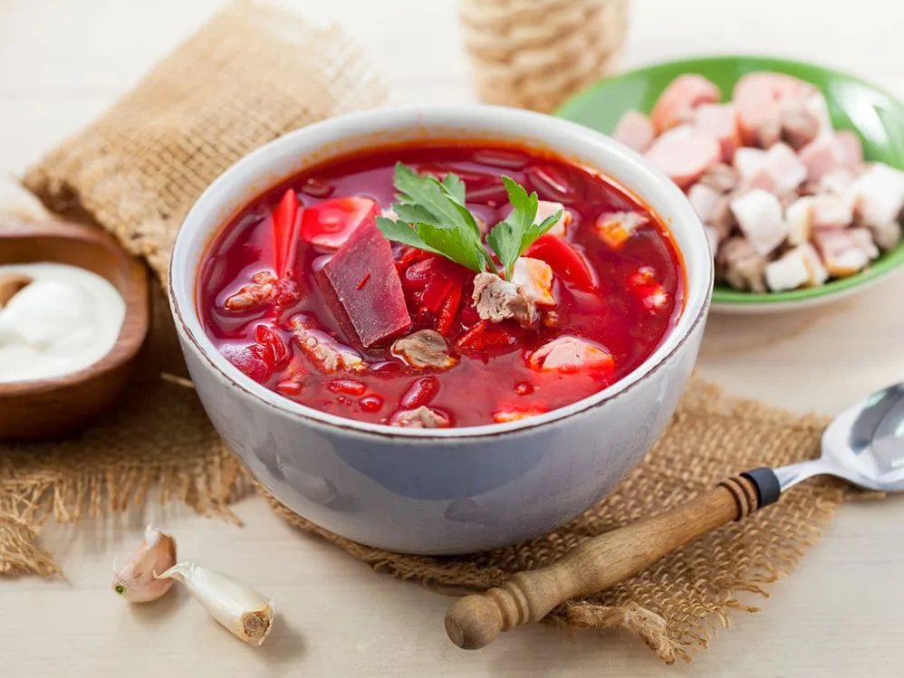
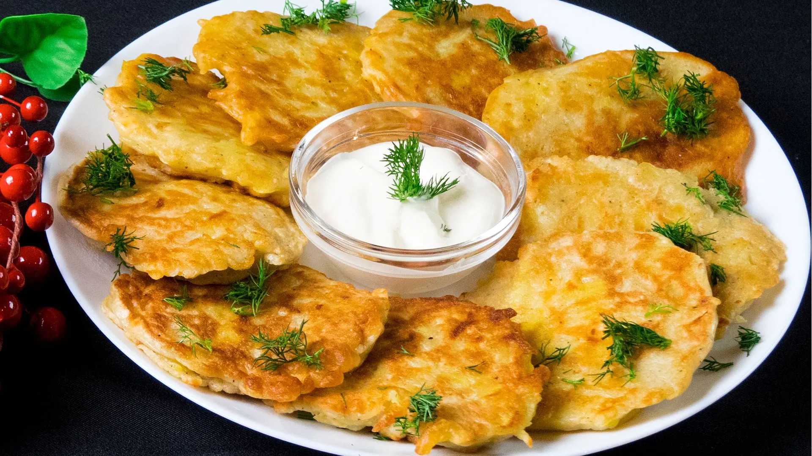
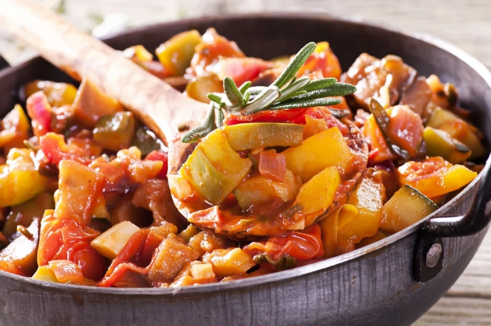

Отличительной особенностью белорусской кухни является широкое распространение блюд из картофеля, а также использование разнообразных колбас, круп, грибов и свинины.
Значительную часть национальной белорусской кухни составляют блюда из тёртого картофеля: драники, клёцки, колдуны, картофельные запеканки, бабка, драчены, капытки, комовики, лежень (картофельный рулет с начинкой), тушёный картофель с мясом и грибами и др. При этом существует несколько способов натирания картофеля и получения картофельной массы:
 Борщ (Боршч) – аналог русского борща, но с некоторыми отличиями. Белорусский борщ обычно готовят без капусты, но с добавлением свеклы, моркови, картофеля, лука и иногда фасоли. Также в него могут добавлять сало или бекон для сытности.
Борщ - это традиционное блюдо восточных славян. Он представляет собой горячий заправочный суп на основе свёклы, которая придаёт ему характерный красный цвет. Борщ имеет массу разновидностей и готовится по-разному в каждом отдельно взятом регионе. Главная составляющая часть любого борща — свёкла, которая создает его вкус, аромат и цвет. Кроме того, в состав борща могут входить различные виды мяса, птица, колбасные изделия, а также набор овощей, включая капусту, морковь и другие.
 Драники (Дранікі) – картофельные оладьи, которые очень похожи на русские драники, но могут быть приготовлены с различными добавками, такими как лук, грибы или сыр. Они являются неотъемлемым атрибутом белорусской кухни. Драники традиционно подают горячими со сметаной, сливочным маслом или другими соусами. Они могут быть приготовлены на сковороде или томлены в различной посуде, например, в глиняных горшках. Остывшие драники меняют свои вкусовые качества, поэтому многие предпочитают их есть сразу после приготовления.
В русской кухне есть аналогичное блюдо - это котлеты или зразы из тертого картофеля. Они также готовятся из тертого картофеля, но часто содержат добавление других ингредиентов, таких как лук, чеснок, яйца и мука для связывания массы. Эти котлеты или зразы затем обжариваются на сковороде до золотистого цвета.
 Отварной перец (Перац адварны) – овощное блюдо, которое готовят из сладкого перца, лука, моркови и помидоров. Оно напоминает русское овощное рагу, но отличается использованием сладкого перца.
Ананлогом можно считать овощное рагу - это блюдо, которое готовится из различных овощей, таких как баклажаны, сладкий перец, помидоры, морковь, лук и зелень. Оно может быть приготовлено как густой овощной суп или соус, так и как жаркое на мучной основе с различными компонентами, включая овощи и мясо. Вариации рецептов могут включать использование различных специй и технологий приготовления.
| Белорусская кухня | |||
|---|---|---|---|
| На 100 г. | Борщ | Драники | Отварной перец |
| Калорийность | 59 ккал | 173 ккал | 66 ккал |
| Белки | 4 г. | 6 г. | 2 г. |
| Жиры | 3 г. | 8 г. | 2 г. |
| Углеводы | 5 г. | 21 г. | 12 г. |